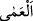
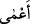
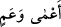
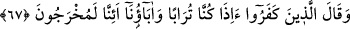

körelmesi sebebiyle âhiretin delillerini neredeyse idrâk edemeyecek kadar bilgisiz ve
câhildirler.
el-Müfredât’ta der ki: “Baş gözünün kaybına da basîretin kaybına da “__WORD__ (körlük)”
denir. Birincisine “__WORD__, ikincisine “__WORD__ denir. Kalb körlüğü daha şiddetlidir.
Kalb körlüğünün yanında baş gözünün kör olmasının hiç bir önemi yoktur. Çünkü
zâhirde nice a’mâ vardır ki bâtında görür. Yine kâfîrlerin, münafıkların ve gafillerin
durumunda olduğu gibi sûrette nice gören vardır ki hakîkatte a’mâdır. Bu körlüğün
tedavisi ancak zıddı ile olur. Bu da kendisiyle âhiretin ve âhiretle ilgili hususların idrâk
edildiği ilimdir.
Sehl b. Abdullah Tüsterî (k.s.): “Hiç bir kul, cehaletten daha şiddetli bir günahla
Allah’a isyan etmemiştir.” dedi. Ona: “Ey Ebû Muhammed! Cehâletten daha kötü bir
şey bilir misin?” diye soruldu. O da şu cevabı verdi: “Bilmediğini bilmemek.”
Dolayısıyla cehalet iki kısımdır: Biri, basit cehalet. Bu ilim için/öğrenmek için bir
sebeptir. Diğeri, cehl-i mürekkeb. Bu ise öncekinin aksine ilme sebep olmaz. Birincisi
zayıf, ikincisi kuvvetli cehâlettir ki ancak Allah’ın telâfi etmesiyle yok olur.
Denilmiştir ki:
Hırs hastalığının şifâsı yoktur.
Cehâlet hastalığının da tabîbi yoktur.
Yine denilmiştir ki:
Cehâlet, ehli için ölümden önce bir ölümdür.
Bedenleri kabirlerden önce kabirdir.
İlimle hayat bulmayan kimse ölüdür.
Neşr zamanında onun için neşr yoktur.
Ey hüneri olup da malı olmayan adam
Sakın Yaratandan şikâyet etme
Nimeti ve cehaleti isteme
Çünkü mezbele içinde gül bahçesidir bu
Allah’ım, bizi peygamberlerin vârisleri olan âlimlerden kıl.
67. İnkârcılar dediler ki: Sâhi, biz ve atalarımız, toprak olduktan sonra,
gerçekten (diriltilip) çıkarılacak mıyız?
“İnkârcılar” Mekke müşrikleri “dediler ki: Sâhi, biz ve atalarımız, toprak olduktan